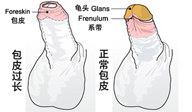
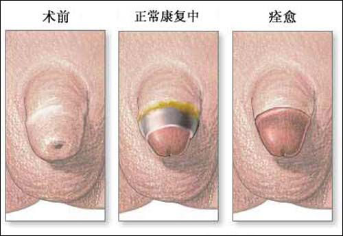

让心爱的她不再受伤害
南宁中山医院专家介绍，正常男性在青春期发育后，龟头全部或大部分露出，如果不能露出龟头，包皮仍然包裹住全部或大部分龟头，但用手能上翻包皮或勃起后包皮上翻能露出龟头，称之为包皮过长。

- 1
包皮过长的危害？
1.妨碍阴茎正常生长。
2.感染泌尿生殖炎症。
3.导致男性性功能障碍。
4.危及女性生殖健康。
5.损害肾脏功能致癌。
- 2
"韩式包皮环切术"优势：
1、手术简便易行，安全无痛苦。手术时间短、不影响工作和生活。
2、过长包皮、包茎轻松脱落，脱落后无疤痕，融整形、美容于一体。
3、术前术后经测量，结果显示阴茎明显增粗。
4、使性功能增强；能不同程度地解决早泄、举而不坚等问题。
5、可预防男性尿道炎、龟头类炎症及癌变；避免交叉污染，预防妇科病。
包皮术后只要不感染，一般在七至十天基本上都能愈合，但是伤口完全愈合并承受外力如性生活需一月左右，但是身体的一般运动不会构成危害。

温馨提示：如有身体不适，可免费咨询本院特邀上海公立三甲专家，或在线免费预约申请男科30元惠民体检活动。
公立三甲专家团队
24小时免费预约挂号平台
患者评论
监督单位


南宁中山医院专家在线
nanning zhongshan hospital experts online
qq在线咨询 悄悄提问
悄悄提问